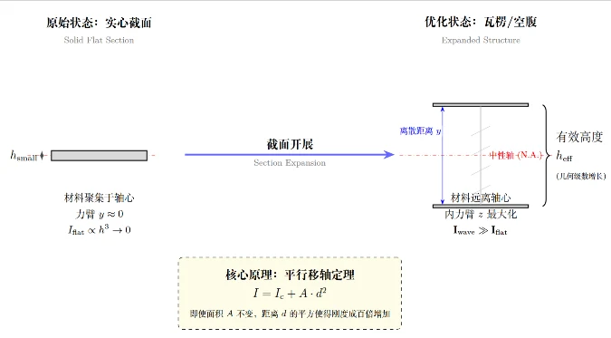
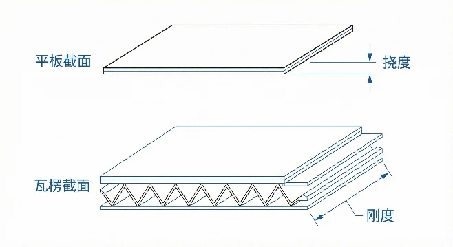
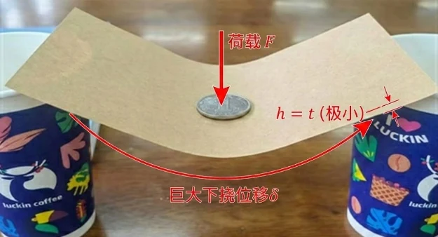
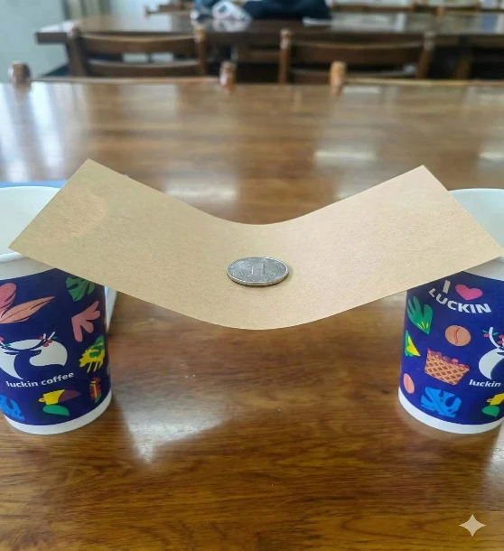
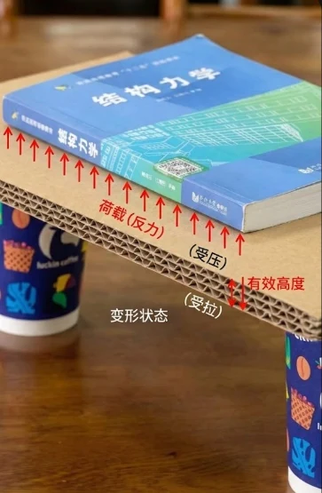
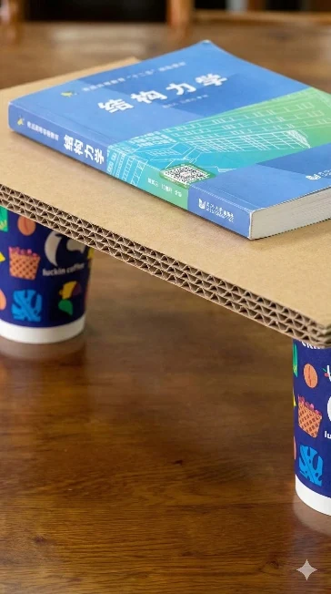
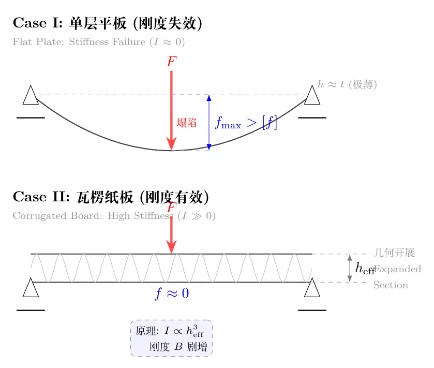
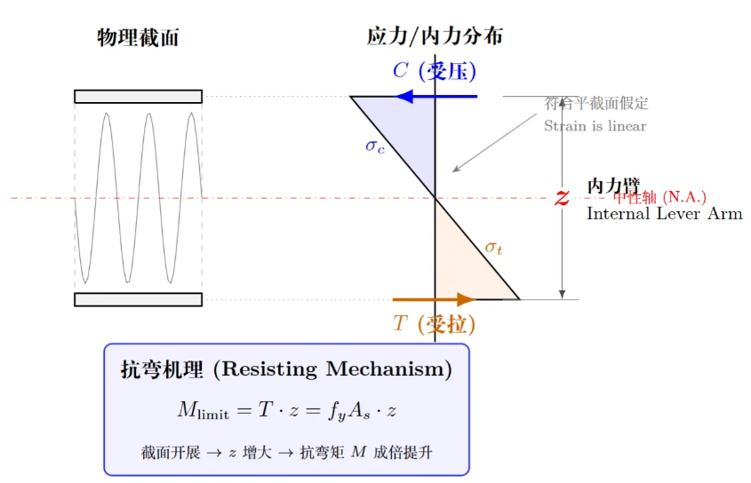

大连交通大学 · 智能建造23
我的原作从“平面”到“立体”的截面跃迁——受弯构件抗弯刚度的设计
马琛籴
基于正常使用极限状态的刚度控制
1.问题的物理意义：刚度与变形的矛盾
在结构工程中，受弯构件（简支梁）不仅要满足承载能力极限状态（强度），更需满足正常使用极限状态（刚度）。根据材料力学理论，简支梁在均布荷载作用下的跨中最大挠度为：
其中，为计算跨度，为截面抗弯刚度。由公式可见，挠度与跨度的四次方()成正比1。对于生活中常见的薄片材料（如纸张、薄板），由于其截面高度极小，导致惯性矩（）趋近于零。因此，在微小荷载下，其挠度就会迅速超过规范限值，导致构件在正常使用阶段失效。
2.优化趋势：以几何换刚度
为了在不增加材料用量（即不增加截面面积）的前提下控制变形，结构设计的核心趋势是“截面开展”：即将材料尽可能布置在远离中性轴的位置，通过改变截面拓扑形式（由实心变空心或波浪形），增大截面的有效高度。以获得更大的静力刚度。


（2）生活中体现：瓦楞纸板的几何刚度实验
【实验设计】
选取材质大致相同的牛皮纸，分别以“单层平板”和“多层瓦楞”两种形式，在相同跨度下进行承载力对比实验。
1.对照组：平板截面（刚度失效）


照片内容：一张单层牛皮纸架在两支座间，中间仅放一枚硬币，纸张严重下垂。
说明：单层纸板作为受弯构件，由于截面高度极小，内力臂不足。在极小的自重和外荷载作用下，刚度无法抵抗弯矩，产生过大变形，属于典型的正常使用极限状态失效。
2.实验组：瓦楞截面（刚度有效）


照片内容：一块瓦楞纸板架在同样跨度上，上方放置一本厚书，纸板纹丝不动
说明：瓦楞结构利用波浪芯层将上下两层面纸“撑开”，形成了类似混凝土箱梁的结构。截面有效高度从跃升至。根据平行移轴定理，惯性矩呈几何级数增长，使得构件在重载下依然保持平直。
（3）对照《结构设计原理》内容：内力臂与平截面假定
本案例的物理现象，深刻反映了《结构设计原理》前几章关于受弯构件的两个核心公理：

1.“内力臂”最大化原理(MaximizingtheInternalLeverArm)
在受弯构件正截面承载力计算章节中，极限弯矩的基本平衡方程为：
或具体表达为：
式中，为内力臂（受压区合力点到受拉区合力点的距离）。
对照分析：平板纸张的，因此抗弯能力极低。瓦楞纸板的设计本质，就是利用波浪层作为连接件，强制增大受压区（上层纸）与受拉区（下层纸）的物理距离。在材料强度和用量不变的情况下，通过最大化内力臂，成倍提升了抵抗弯矩的能力。
2.平截面假定的应用(ApplicationofPlaneSectionAssumption)
受弯构件分析的基石是“平截面假定”：截面应变沿高度呈线性分布()。这意味着，距离中性轴越远的位置，材料的应变和应力越大。
瓦楞纸板的构造完美契合这一假定。它将高强度的牛皮纸布置在截面最外缘()，使其充分发挥抗拉/抗压性能；而将低密度的波浪芯层布置在中性轴附近。这是一种基于平截面假定的“材料效能最优分布”。3.刚度与截面有效高度的关系
在受弯构件挠度验算章节，抗弯刚度(或)是控制变形的关键。对于矩形或箱形截面，刚度贡献主要来源于有效高度：
实验清晰地证明了的平方效应。瓦楞纸板通过几何构造获得的，使得其刚度远大于等量材料实心板的刚度，从而满足了的正常使用要求。

这是一份便于网页阅读的原作视图，保留提交内容的文字、图片和基本顺序；公开页面不显示学号。